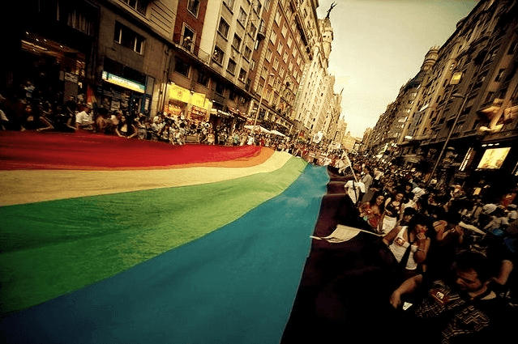
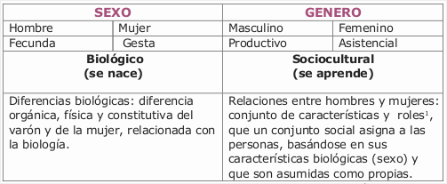
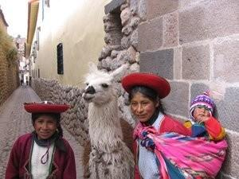
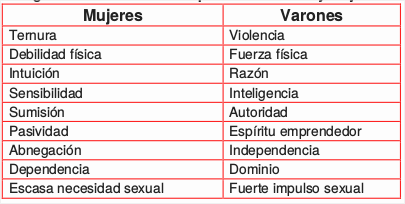
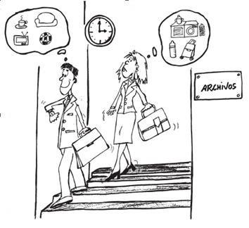
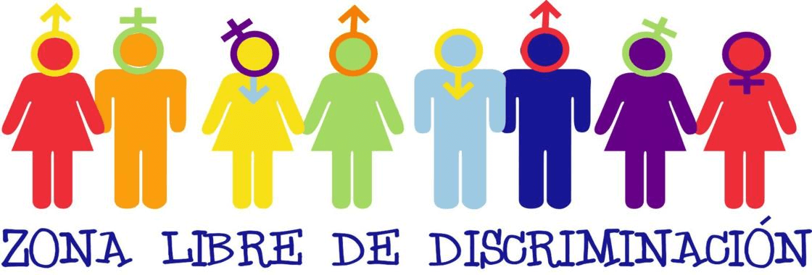
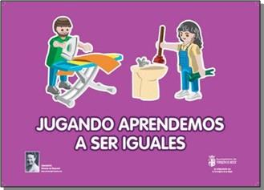

La igualdad de género en el plano local
El concepto de género revela las diferencias existentes entre varones y mujeres. Hace hincapié en que estas diferencias se construyen socialmente y no son naturales. Esta noción se relaciona con todos los aspectos de la vida de las personas. Determina las características, roles y funciones que se atribuyen a las personas dependiendo de su sexo y de la valoración que hace de él cada sociedad.
Si analizamos la genealogía del concepto podemos ver que se encuentra en construcción y en un debate permanente. Son múltiples las conceptualizaciones.
Décadas atrás, en 1949 la precursora Simone de Beauvoir decía: “No se nace mujer, se llega a serlo…Simone Beauvoir, “El segundo sexo”” y “Él es el sujeto, él es lo absoluto; ella es lo otro”.
En los años noventa, la teórica feminista Joan Scott destaca que el término género “es el elemento constitutivo de las relaciones basadas en las diferencias que distinguen los sexos y es una forma primaria de las relaciones de poder”.
Marcha por la diversidad sexual, Buenos Aires.
El género desde sus orígenes, se ha asociado al concepto de mujer. Pero, de esta manera se reduce su dimensión de abordaje ya que se invisibiliza la relación existente entre diversas masculinidades y femineidades. Además, es fundamental ampliar la mirada para incorporar la visión de diversidad sexual.
En las últimas décadas muchas feministas han cuestionado la idea de que el sexo determina el género, argumentando que el primero también es una construcción cultural. Tampoco se considera el género como una categoría binaria, y menos aún complementaria, sino jerárquica.
Mujeres y varones participan de relaciones de poder en las cuales ellas ocupan la posición subordinada
Este concepto plantea que las representaciones y valoraciones de lo femenino y lo masculino, las normas que regulan sus comportamientos y las atribuciones a cada sexo, son producto de complejas construcciones sociales y culturales que se elaboran a partir de las diferencias sexuales y que constituyen modos de significar relaciones de poder y estructurar relaciones sociales, así como la subjetividad individual.
El género es un concepto:
Se utilizan dos términos distintos para referirse a las diferencias biológicas y a aquellas construidas socialmente: sexo y género, respectivamente. En este sentido abordamos el sistema sexo-género, que detallamos a continuación.
Este sistema trata de explicar cómo basándonos única y exclusivamente en la diferencia del sexo con el que nace cada persona (mujer o varón) se crea todo un conjunto creencias, valores, costumbres, normas, prácticas, oportunidades y comportamientos sociales diferentes para ambos sexos. Mientras el sexo es entendido como la diferencia sexual anatómica, el género es definido como una construcción social, que cambia en el tiempo y según las sociedades.

Sin embargo esta manera binaria de entender las categorías sexo y género fue criticada sobre todo por el movimiento transexual, argumentando que tanto el sexo como el género son construcciones sociales y la supuestamente coherencia entre ellos una manera de estabilizar la heterosexualidad como norma y en ultima consecuencia una argumentación biológica que cementa el sistema de los dos sexos y las líneas de poder dentro de él.
Ser distintos no significa ser desiguales
Las relaciones de género son definidas como los modos en que las culturas asignan las funciones y responsabilidades a la mujer y al varón. Estas relaciones determinan los modos de acceder a los recursos materiales (como la tierra, la vivienda) y a recursos simbólicos, como el poder político. Esta estructura repercute en la vida cotidiana manifestándose, por ejemplo, en la forma en la que se divide el trabajo doméstico y extra-doméstico (entre varones y mujeres), en las responsabilidades familiares o en el campo de la educación, entre otros espacios.
Afirmar que el género es un proceso de creación cultural a partir de las particularidades sexuales o biológicas significa que:
Las relaciones de género se articulan de modo conflictivo con las múltiples posiciones que ocupan las personas, como la clase social, su etnia/raza o su opción sexual.
Ideas centrales

Los estereotipos son modelos de conducta social basados en opiniones preconcebidas que adjudican valores y conductas a las personas en función de un grupo de pertenencia (sexo, edad, raza, etnia, etc).
Los estereotipos de género responden a valores, modelos, comportamientos y actitudes definidos por el sexo de las personas sin tener en cuenta sus características particulares.
Los atributos y los valores de género, desde criterios de deseabilidad social, conforman la masculinidad y la feminidad de los individuos. Cuando son negativos, discriminatorios o peyorativos y condicionan la capacidad de las personas para desarrollarse, limitan la libertad de elección y atentan contra sus derechos.
Además, el valor de los estereotipos no es el mismo para varones que para mujeres, muchas veces hay una valoración positiva y superior para lo masculino en múltiples sentidos. En esta valoración existen factores de discriminación.
A través del proceso de socialización se transmiten ideas y apreciaciones a las personas. La familia es la primera transmisora e incorpora en los niños y las niñas estereotipos sexuales. Luego la escuela reproducirá pautas de comportamiento que pueden ser discriminatorias.

Vemos así que este tipo de construcciones simbólicas tienen también asociada una carga valorativa diferencial y jerarquizada. Asimismo, nos permiten acercarnos al hecho de que en cada sociedad se espera que las mujeres y los varones se comporten de manera diferente, ya que desde la infancia son socializados/as para ajustarse a los roles y normas masculinos y femeninos: deben vestirse de manera diferente, jugar distintos tipos de juegos, interesarse por temas diferentes, etc.
En la edad adulta esta jerarquización se trasladará al mundo del trabajo, a la forma de establecer relaciones, al desarrollo de la sexualidad, a la manera de hablar y de conducirse en los diversos ámbitos de la sociedad.
Este mandato social de base biologicista se convierte en el presupuesto que fundamenta las relaciones entre los sexos y condiciona las posiciones que la mujer debe ocupar y las funciones que debe cumplir. La construcción del modelo de femineidad tiene como punto central el vínculo culturalmente establecido entre el cuerpo de la mujer y la reproducción. La percepción del cuerpo de las mujeres en relación directa con la función biológica de la procreación implica limitar, cercenar y/o desconocer el resto de las dimensiones y potencialidades propias de las mujeres. Esta perspectiva respecto de lo social deja entrever el hecho de que las mujeres han sido valoradas desde siempre como esenciales para la supervivencia y multiplicación del grupo. Esta operación simbólica coloca a la madre en el lugar de la mujer.
La perpetuación de estos estereotipos es negativa tanto para los hombres como para las mujeres ya que se presentan como modelos equivocados y difíciles de transformar, dificultando el desarrollo de las cualidades de las personas independientemente de su sexo. Esto genera desigualdades entre las mujeres y los hombres que provocan situaciones de discriminación.
Si entendemos por rol, al conjunto de tareas y funciones que se derivan de la situación o posición de status de una persona con respecto a su grupo de pertenencia, identificamos los roles de género como aquellos inherentes a las tareas, funciones y conductas que tradicionalmente se atribuyen a un sexo como propio, y se aprenden e interiorizan a través de instituciones y de mecanismos que surgen en el proceso de socialización.
La sociedad intenta que los individuos que la componen asuman los roles que les corresponden repartiéndolos, en sus diversas funciones, entre varones y mujeres en función de su sexo. A esto se llama división sexual de las funciones y expectativas sociales de la sociedad.
Espacios Diferenciados
Lo público/el espacio público
Abarca las tareas relacionadas en general con la vida económica, política y social. Territorio ocupado y adjudicado hasta hoy mayoritariamente por y para los hombres. Tiene que ver con el trabajo productivo de carácter mercantil, y por tanto, tiene un valor de cambio e invisible.
Lo privado o doméstico/el espacio privado
Abarca la organización atención de la familia y las labores derivadas del cuidado del hogar. Este territorio está ocupado mayoritariamente por mujeres. Está relacionado con el trabajo reproductivo y se le adjudica socialmente un menor grado de importancia frente al rol público. Desde esta perspectiva se habla de división sexual del trabajo, definida como la división del trabajo remunerado (trabajo productivo) y el no remunerado (trabajo reproductivo) entre hombres y mujeres respectivamente, en función de los roles que históricamente se les ha asignado.
La división entre espacio público y privado y el reparto de roles es una perspectiva de interpretación de las relaciones sociales que se configuró e impuso durante los últimos dos siglos. Este modelo, que aporta a la construcción de la subalternidad de las mujeres y que ha contribuido al despliegue de diversas formas de cercenamiento en el acceso a derechos para las mujeres, se ha ido trasmitiendo de generación en generación, incluso a través de las propias mujeres.
Varones y mujeres, al hacer propio y ejercer estos roles asignados, han educado y educan a las futuras generaciones perpetuando estos mismos valores, aún sin ser concientes de ello.
Resulta interesante incorporar la descripción de este fenómeno que realiza la historiadora Mirta Lobato:
La división entre espacio público y privado es un elemento importante del discurso de la domesticidad. [...] Apoyándose en una dicotomía imaginaria se organizaron los sistemas sociales y se establecieron normas que definen espacios de competencia para las actividades económicas, políticas y culturales (Armstrong, 1987). En Europa este proceso se ubica hacia fines del siglo XVIII y en América latina a partir del siglo XIX, cuando la “doctrina” de las dos esferas excluyentes de actividad humana (lo público y lo privado) surge como componente de la ideología victoriana sobre la mujer. [...] Mientras que la familia dejó de ser una unidad de producción para transformarse en una de tipo emocional, la producción material de bienes pasó a realizarse socialmente fuera del hogar y se enfatizó que entre ambos espacios no había ningún tipo de interferencias. La separación entre la familia y el trabajo, entre producción doméstica y formas socializadas de producción, reconfiguró las anteriores divisiones del trabajo entre hombres y mujeres. Esta noción que presentaba las esferas pública y privada como dicotómicas, separadas y divididas, no sólo en el espacio sino por las actividades realizadas y por el sexo de los sujetos, fue clave también en el análisis político que consideraba la cuestión de la ciudadanía y la participación en el debate sobre los asuntos públicos donde la intervención de las mujeres quedó, a veces, subsumida en el universal de los ciudadanos varones y, otras, marginada en tanto se consideraba que su esfera de actuación privilegiada era el hogar
La función de la familia en la transmisión de valores, normas y modelos en torno a las identidades de género es de fundamental importancia. Diversas investigaciones han puesto de manifiesto que los padres y las madres se comportan de manera diferente según sus hijos sean varones o mujeres. Las niñas y los niños aprenden a desplegar roles sobre la base de la educación que reciben, el medio en el que se desarrollan y también a partir de la identificación con figuras adultas significativas. De una parte, encontramos el modelo de la femineidad impregnado de valores asociados a lo maternal y que sostienen la mayoría de las culturas occidentales. Por otra parte, hallamos el modelo de la masculinidad. Veamos la perspectiva presentada al respecto por el Diccionario de estudios de género y feminismos:
¿Es la masculinidad una condición biológica, un modo de ser, un conjunto de atributos, un mandato o una posición? [...] Partimos, entonces, de pensar las identidades masculinas como construcciones culturales que se reproducen socialmente y que, por ello, no pueden definirse fuera del contexto en el cual se inscriben. Esa construcción se desarrolla a lo largo de toda la vida, con la intervención de distintas instituciones (la familia, la escuela, el Estado, la iglesia, etc.) que moldean modos de habitar el cuerpo, de sentir, de pensar y de actuar el género. diversas investigaciones sobre la construcción social de la masculinidad plantean la existencia de un modelo hegemónico que [...] opera al mismo tiempo en dos niveles: en el nivel subjetivo, plasmándose en proyectos identitarios, a manera de actitudes, comportamientos y relaciones interpersonales, y en el nivel social, afectando la manera en que se distribuirán–en función del género- los trabajos y los recursos de los que dispone la sociedad. [...] no todos los varones viven ni valoran del mismo modo los esquemas de masculinidad hegemónica, pero todos los conocen. Todos han sido, de uno u otro modo, socializados dentro de este paradigma. Las mujeres también los conocen, y muchas veces esperan que los varones realmente se comporten siguiendo este modelo.[...] en pocas palabras: varones y mujeres participan en la construcción de la masculinidad como una posición privilegiada”.
Entonces los roles de género son las tareas o actividades que se espera que desempeñe una persona según el sexo al que pertenece. Por ejemplo, desde este enfoque sería lógico que los varones sean albañiles o choferes, mientras que las mujeres amas de casa o enfermeras.
En el rol productivo, pueden agruparse todas aquellas actividades que generan ingresos económicos, que producen bienes o servicios para la venta o para el autoconsumo.
El rol reproductivo es la reproducción biológica, y aquellas actividades que están vinculadas al bienestar y a la sobrevivencia de la familia.
Por último, rol de gestión comunitaria son las actividades que se realizan para aportar al desarrollo comunitario.
En la actualidad se dice que las mujeres han asumido un triple rol, el productivo, el reproductivo y a veces el de gestión comunitaria, aumentando su carga de trabajo y sus responsabilidades, muchas veces de manera desigual en relación a los varones.
El problema con el trabajo doméstico radica en que se asume como una tarea principalmente femenina, pero además sin valor alguno. Como es un trabajo que nunca termina, que se repite incesantemente, un trabajo del que no se pueden ver resultados permanentes, no se lo aprecia. Una desvalorización de las tareas domésticas, desvaloriza también a quien las ejecuta.

Seguramente a lo largo de tu día realizas muchas tareas, desde que te levantas hasta que termina la jornada. Te proponemos que nos cuentes cómo es un día de tu vida y que enumeres en la tabla que está a continuación, todas aquellas actividades que realizas, desde preparar el desayuno, hasta ir a un trabajo fuera de tu casa. También te pedimos que las separes en trabajo productivo (aquel que se realiza fuera del hogar) y reproductivo (el que se hace en dentro del hogar).
La igualdad de género no significa que los hombres y las mujeres son o deberían ser iguales, sino que ambos tendrían que gozar de los mismos derechos y oportunidades en todos los aspectos de la vida. Se basa en la paridad entre hombres y mujeres en el hogar, la comunidad y la sociedad. En el contexto del desarrollo económico local, supone que la participación en la gestión pública y el acceso a oportunidades y condiciones de trabajo decentes, a los recursos y a los servicios no se vean perjudicados por el hecho de ser hombre o ser mujer
La equidad parte de la necesidad de reconocer y valorar las diferencias entre hombres y mujeres otorgándoles igualdad de oportunidades a todos y todas para el desarrollo de sus potencialidades, habilidades y destrezas.
Lograr la equidad entre varones y mujeres tiene que ver con los siguientes aspectos:
A partir de las diferencias construidas desde la identidad de género se han establecido desigualdades y jerarquías en la relación de hombres y mujeres.
Al no ser los roles femeninos valorados de la misma manera que los roles masculinos, las relaciones de género no son equitativas, existe discriminación hacia la mujer.
Pautas para la incorporación de la igualdad de género:
Por ejemplo:
Existen algunas culturas que no consideran importante la educación para las mujeres, por ello no mandan a sus hijas a la escuela porque creen que es de mayor beneficio para ellas quedarse ayudando en las labores domésticas.
En este caso no existe igualdad de oportunidades puesto que estas mujeres están en desventaja frente a los hombres en cuanto a conocimientos formales. Tampoco existe igualdad de trato porque se selecciona al hombre para que realice actividades (asistir a la escuela) que le representarán beneficios en el futuro. Por todo lo mencionado no existe igualdad de condición porque esa mujer en situación de analfabetismo y pobreza tendrá muchas desventajas al momento de mejorar su calidad de vida por la falta de oportunidades, trato y condición.

El nivel educativo de la mujer en muchos países latinoamericanos es todavía muy deficiente, esto está estrechamente relacionado a su bajo nivel de vida personal, familiar y social expresada en dificultades y limitaciones latentes en la vida de las mujeres:
La perspectiva de género analiza los roles sociales, los estereotipos que inciden culturalmente y la relación jerárquica entre varones y mujeres como factores fundamentales en la promoción, protección o impedimento para el pleno desarrollo y acceso a derechos para las mujeres. El concepto de género se refiere básicamente al análisis de las relaciones de poder: se trata de identificar y analizar las desigualdades que se producen sobre la base de la valoración de cada persona por su pertenencia sexual.
Asimismo, es importante tener presente que las diferencias de género se entrecruzan y potencian con diferencias establecidas sobre la base de la condición social y económica, la pertenencia étnica o nacional, la edad, entre otras variables.
Cuando hablamos de modelos aprendidos, estamos haciendo referencia a construcciones simbólicas que pueden y deben ser modificadas.
El enfoque de género“Glosario de términos sobre género”. Centro Nacional para el Desarrollo de la Mujer y la Familia / Glosario de género y salud. USAID es la “forma de observar la realidad con base en las variables sexo y género y sus manifestaciones en un contexto geográfico, étnico e histórico determinado. Este enfoque permite visualizar y reconocer la existencia de relaciones de jerarquía y desigualdad entre hombres y mujeres expresadas en opresión, injusticia, subordinación, discriminación mayoritariamente hacia las mujeres”.
Podría homologarse con el término perspectiva de género, debido a que se define como “el enfoque o contenido conceptual que le damos al género para analizar la realidad y fenómenos diversos, evaluar las políticas, la legislación y el ejercicio de derechos, diseñar estrategias y evaluar acciones”.
Desde este punto de vista, se considera que se trata de una perspectiva teórico-metodológica, que implica una forma de ver la realidad y una forma de intervenir o actuar en ella.
La perspectiva de género se caracteriza por ser inclusiva, al incorporar al análisis otras categorías como la clase, la etnia y edad; asimismo observar y comprender cómo opera la discriminación, al abordar aspectos de la realidad social y económica de mujeres y hombres con el fin de equilibrar sus oportunidades para el acceso equitativo a los recursos, los servicios y el ejercicio de derechos.
Igualmente, el enfoque de género permite cuestionar el androcentrismo y el sexismo existente en los ambientes sociales y laborales, al mismo tiempo que propone estrategias para erradicarlos; visibiliza las experiencias, intereses, necesidades y oportunidades de las mujeres con miras al mejoramiento de las políticas, programas y proyectos institucionales; y, por último, aporta herramientas teóricas, metodológicas y técnicas para formular, ejecutar y evaluar estrategias que conduzcan al empoderamiento de las mujeres.
La incorporación de la perspectiva de género es una estrategia o un proceso mediante el cual se logra la igualdad en ese aspecto. Por un lado, significa que existen políticas, programas y estructuras institucionales para remediar las desigualdades y preservar la igualdad entre ambos sexos. Por el otro, supone que se están adoptando medidas destinadas a atender las necesidades y prioridades específicas de los hombres y las mujeres, ya sea por separado o en conjunto. Los enfoques participativos, como el desarrollo económico local, exigen no solo una representación equilibrada de los hombres y las mujeres que participan en el proceso, sino también la creación de las condiciones necesarias para que todos los participantes expresen libremente sus opiniones y las defiendan. Además, es necesario que la planificación y puesta en práctica de las estrategias de desarrollo económico local respondan de verdad a las preocupaciones específicas, y a veces disímiles, de los hombres y las mujeres.
Cuando se incorpora efectivamente la perspectiva de género en el plano local, se logran cambios fundamentales en las relaciones de poder entre ambos sexos.
“La incorporación de la perspectiva de género no consiste simplemente en añadir un “componente femenino” ni un “componente de igualdad entre los géneros” a una actividad existente. Es asimismo algo más que aumentar la participación de las mujeres. Significa incorporar la experiencia, el conocimiento y los intereses de las mujeres y de los hombres para sacar adelante el programa de desarrollo. Puede entrañar la determinación de cambios necesarios en ese programa. Quizás requiera cambios en los objetivos, estrategias y acciones para que hombres y mujeres a un tiempo puedan influir y participar en los procesos de desarrollo y beneficiarse de ellos. El objetivo de la incorporación de la perspectiva de género es, por lo tanto, transformar las estructuras sociales e institucionales desiguales en estructuras iguales y justas para los hombres y las mujeres.”
En las esferas donde las mujeres o los hombres se encuentran en una posición de especial desventaja por haber sido víctimas de la discriminación, tal vez sea necesaria la acción positiva para paliar el desequilibrio. Se trata de medidas provisionales y específicas en favor de las personas de un sexo o del otro, que confieren ciertas ventajas al grupo desfavorecido y le permiten participar en la labor de desarrollo y beneficiarse de ella en pie de igualdad.

Barrancos, Dora (2007). Mujeres en la sociedad argentina, Buenos Aires, Sudamericana, pág. 327.
Gamba, Susana Beatriz, coord. (2007): Diccionario de estudios: de género y feminismos. 1a. ed., Buenos Aire. Biblos.
Héritier, Françoise (2007), Masculino/Femenino II. Disolver la jerarquía, Buenos Aires, FCE, pág. 17.
Lobato, Mirta Zaida (2009). Trabajo, cultura y poder: dilemas historiográficos y estudios de género en la Argentina en Historias con mujeres, mujeres con historia, Buenos Aires, UBA, pág.p. 29.
OIT (2010), Guía para la incorporación de la perspectiva de género en las estrategias de desarrollo económico local Oficina Internacional del Trabajo, Programa de Desarrollo Económico Local, Oficina para la Igualdad de Género, Ginebra.
OIT (2001), Programa Formujer, Incorporación de la perspectiva de género en la formación profesional: materiales didácticos, Montevideo.